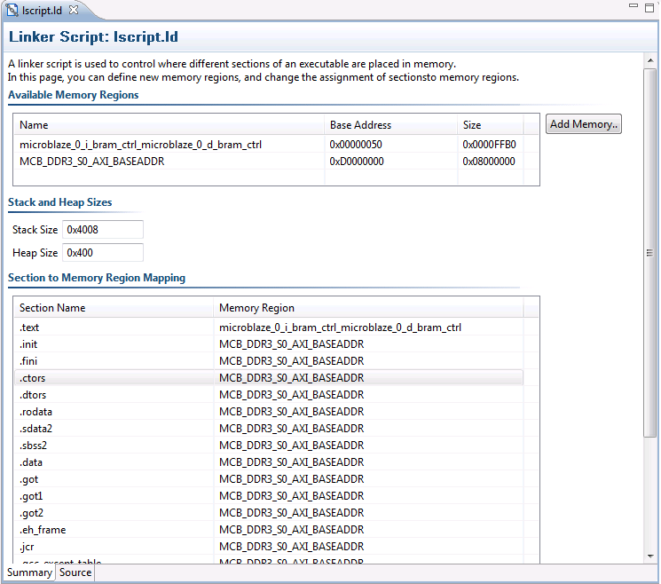

Once you generate a linker script, there are multiple ways in which you can update it.

The linker script editor provides the following functionality.
Name |
Function |
|---|---|
Available Memory Regions |
This section lists the memory regions specified in the linker script. You can add a new region by clicking on the Add button to the right. You can modify the name, base address and size of each defined memory region. |
Stack and Heap Sizes |
This section displays the sizes of the stack and heap sections. Simply edit the value in the text box to update the sizes for these sections. |
Section to Memory Region Mapping |
This section provides a way to change the assigned memory region for any section defined in the linker script. To change the assigned memory region, simply click on the memory region to bring a drop down menu from which an alternative memory region can be selected. |